This page never hosts the cartridge or a ROM download.
Summary
- Run id
20261123-1648-684bac5c-easy-corvin-stage-start-boss- Build SHA
684bac5c- ROM sha256
519f58d9e31205a8911062b48c781a65df0c91d166b6b29813de03870387ac7f- Emulator
pyboy 2.7.0 (window=null, cgb=True)- Seed
1369886733- Started
- Nov 23, 2026 4:46 PM ET
- Ended
- Nov 23, 2026 4:46 PM ET
- Play time
- 3m 59s (239s)
- Wall time
- 11s (11.05s)
- Emulated frames
- 14402
- Outcome
- timeout
- Furthest progress
- stage 4, room 62, 3 bosses
- End state
screen=room room=62 hp=8/16 score=0 coins=16
Downloads
run.json · telemetry.json · commentary.md · gameplay.mp4 · opening GIF

Stages
| Stage | Play | Rooms | Damage | Deaths | Boss | Status | Outcome |
|---|---|---|---|---|---|---|---|
| 3 | 1m 00s (60s) | 1 (62) | 12 / 12 hits | 0 (—) | seen=1 cleared=1 (1m 00s (60.2s)) | — | cleared |
| 4 | 2m 59s (179s) | 1 (62) | 0 / 0 hits | 0 (—) | seen=0 cleared=0 (0s) | — | timeout |
Deaths
Commentary
Opening GIF
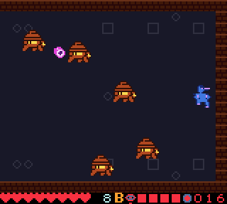
Gameplay
Screenshots
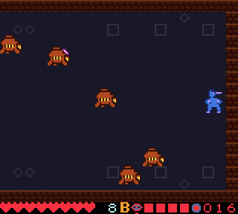

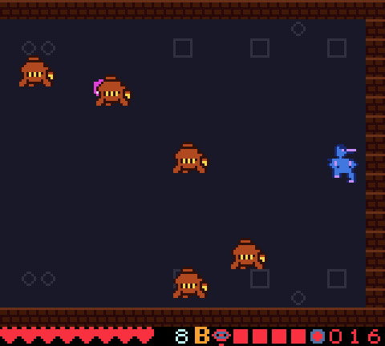
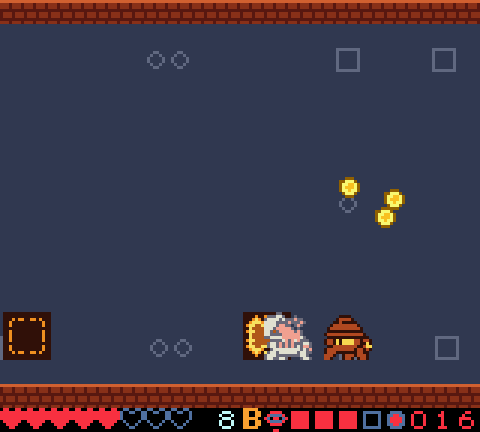
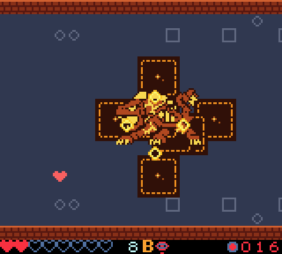

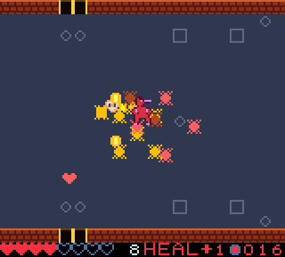
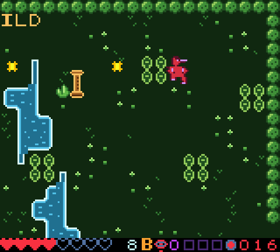
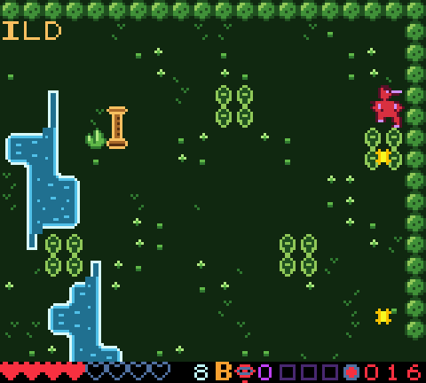
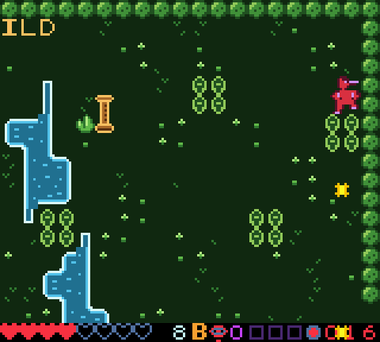
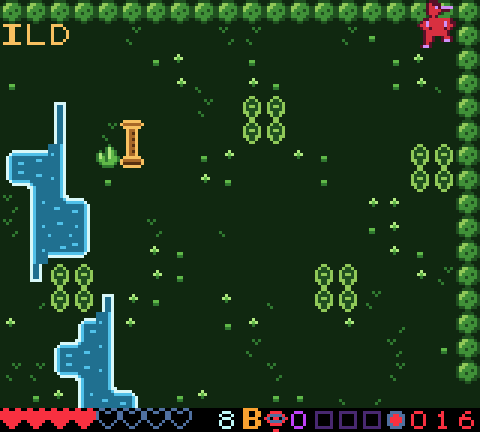

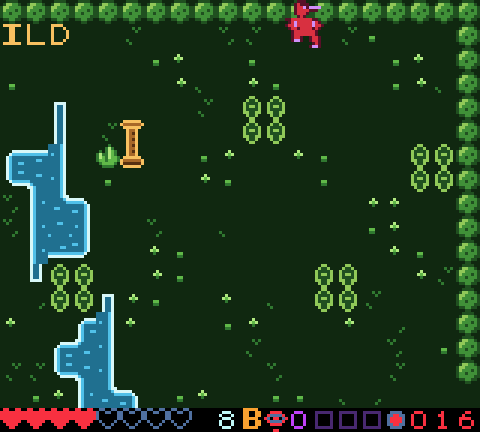

Notes
- Stage-start run loaded from quintra-stage-03-boss-corvin-easy.pyboy (not a full boot).
- Entered a Colossus fight on stage 3.
- Cleared stage 3 Colossus at t=60s.
- Timed out after 4.0 emulated minutes at stage 4 room 62.
Suspected bugs
- None recorded.
1369886733684bac5cWhat happened
Deaths
Gameplay notes
Boss attempts